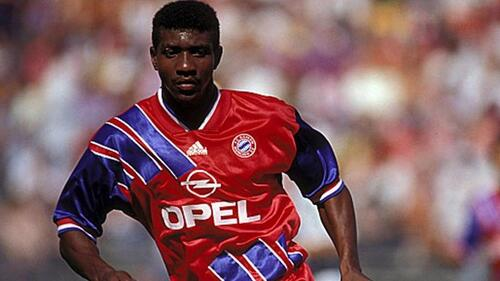
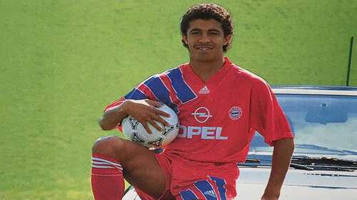
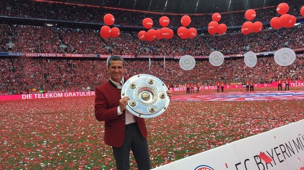
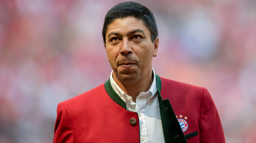
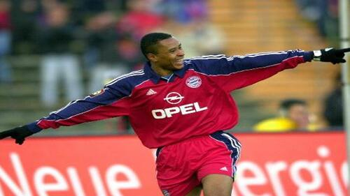
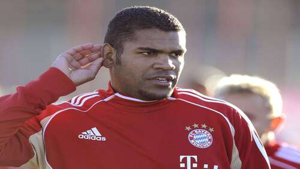
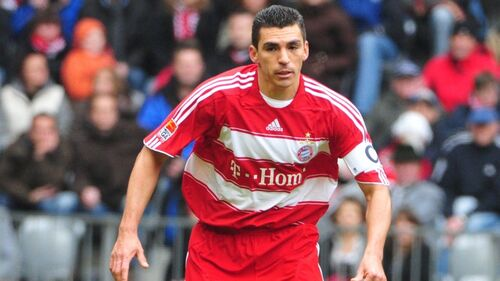
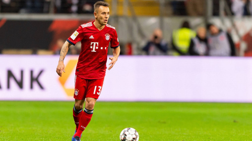
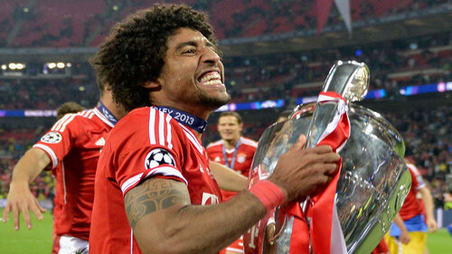
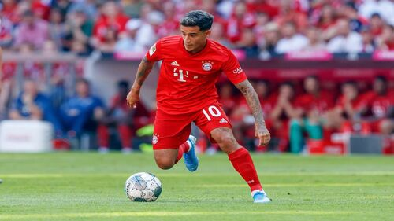

-

Bernardo Fernandes da Silva
Com uma passagem discreta de apenas uma temporada, o primeiro brasileiro a jogar no clube alemão, junto ao Mazinho, voltou as terras tupiniquins onde se destacou mais. Hoje está aposentado.
Gols: 0
Jogos: 5
Tempo: 1991 - 1992
Títulos: 0
-

Waldemar Aureliano de Oliveira Filho
Mazinho passou por dificuldades para se adaptar no clube, jogou por três temporadas, mas não se destacou ganhando apenas um título (Bundesliga 1993-1994) e retornou ao Brasil para compor o centenário do Flamengo. Atualmente tem uma escolinha de futebol em Tocantins.
Gols: 16
Jogos: 56
Tempo: 1991 - 1994
Títulos: 1
-

Jorge de Amorim Campos
Após quatro anos no time de Leverkusen, o ex-lateral chegou a bavieva conquistando o campeonato alemão, assim deixando a sua marca. Hoje, o tetracampeão de 1994, é treinador de futebol.
Gols: 80
Jogos: 6
Tempo: 1992 - 1994
Títulos: 1
-

Élber Giovane de Souza
Nascido em Londrina no Paraná, Giovane Élber é um dos brasileiros que mais se destacaram sendo o maior artilheiro brasileiro na história do clube alemão. No presente, Élber é embaixador do clube e pertence ao time de lendas.
Gols: 139
Jogos: 265
Tempo: 1997 - 2003
Títulos: 13
-

Paulo Sérgio Silvestre do Nascimento
O tetracampeão pela seleção brasileira, retornou as terras germânicas vencendo a maioria dos títulos possíveis e fez dupla no ataque com Élber no esquadrão imortal. Nos dias de hoje é comentarista esportivo e também lenda do clube.
Gols: 34
Jogos: 122
Tempo: 1999 - 2002
Títulos: 7
-

Breno Vinícius Rodrigues Borges
Um dos brasileiros mais polêmicos que passou pelo clube, por ter incendiado a própria casa e preso, Breno também conseguiu deixar o seu nome na história vencendo a Bundesliga e Copa da Alemanha. Hoje está sem clube.
Gols: 0
Jogos: 33
Tempo: 2008 - 2012
Títulos: 2
-

José Roberto da Silva Júnior
O multicampeão, Zé Roberto, viveu seus melhores momentos no time de Munique sendo convocado para a Copa do Mundo de 2006. Atualmente faz parte do time de Lendas do clube e aos 47 anos vive impresionando com sua forma física.
Gols: 20
Jogos: 248
Tempo: 2002 - 2006 e 2007 - 2009
Títulos: 10
-

Lucimar da Silva Ferreira
Devido ao seu destaque no clube anterior, conquistando o prêmio de melhor jogador da Bundesliga, o zagueiro acertou a sua ida sendo tricampeão alemão. No entanto não teve o seu contrato renovado e seguiu para Itália onde foi campeão europeu. Hoje o pentacampeão está aposentado.
Gols: 218
Jogos: 12
Tempo: 2004 - 2009
Títulos: 8
-

Luiz Gustavo Dias
Um dos brasileiros que conquistou a tríplice coroa (Bundesliga, DFB-Pokal e UEFA Champions League), o volante perdeu espaço com a chegada do Pep Guardiola e com isso mudou de clube. Hoje joga no Fenerbahçe.
Gols: 6
Jogos: 100
Tempo: 2011 - 2013
Títulos: 5
-

Marcio Rafael Ferreira de Souza
O colecionador de títulos retornou à Alemanha após uma temporada na Itália, mas dessa vez foi contratado por três anos pelo Bayern tendo o seu contrato renovado. Depois de colecionar títulos, se despediu do clube e atualmente está no São Paulo.
Gols: 6
Jogos: 266
Tempo: 2011 - 2019
Títulos: 18
-

Dante Bonfim Costa Santos
Após uma passagem de destaque no Borussia Mönchengladbach, o zagueiro baiano se transferiu onde foi multicampeão, durante o comando de Pep Guardiola se transferiu para o Wolfsburg buscando a titularidade e hoje joga no Nice(França).
Gols: 5
Jogos: 133
Tempo: 2012 - 2015
Títulos: 10
-

Douglas Costa de Souza
Em sua primeira passagem, sua chegada teve bastante expectativa por conta de seu destaque. No entanto, por conta de lesões não conseguiu recuperar a forma. Na sua volta e com outro comando, não teve o mesmo desempenho. atualmente está no Los Angeles Galaxy.
Gols: 15
Jogos: 97
Tempo: 2015 - 2018 e 2020 - 2021
Títulos: 5
-

Philippe Coutinho Correia
A sua chegada por empréstimo do Barcelona teve bastante expectativa devido o seu futebol mostrado no Liverpool. No entanto, ficou boa parte na reserva e o seu valor no mercado não agradou a diretoria que pretendia compra-lo, mesmo assim conquistou a tríplice coroa e joga no Aston Villa.
Gols: 11
Jogos: 38
Tempo: 2019 - 2020
Títulos: 3